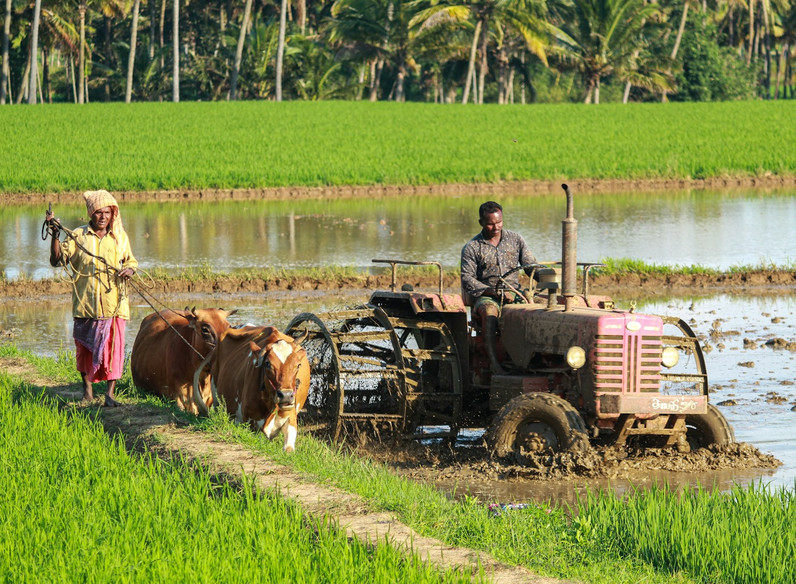
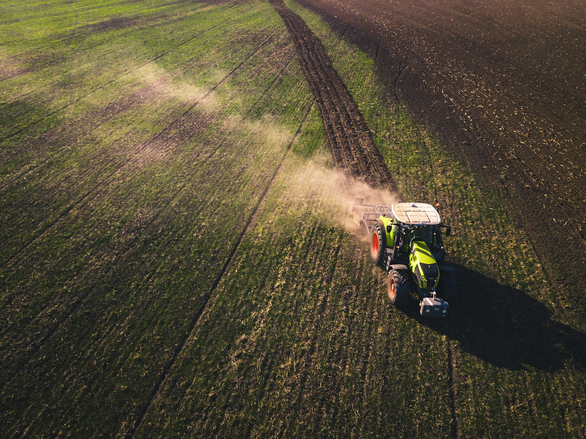

Global Grain Supply Trends
New reports suggest a 5% increase in maize yield expectations for the coming quarter across West African trade hubs.
Organic Fertilizers on the Rise
Local farmers in Ogun State are switching to poultry-based compost for sustainable cassava farming, reducing chemical input costs by up to 30%.
Export Corridor Opens for Cocoa
A new trade agreement signed between Nigeria and the EU will accelerate cocoa exports from Cross River and Ondo States, promising better farmgate prices for smallholders.
Government Subsidy for Mechanised Farming
The Federal Ministry of Agriculture launches a ₦12 billion scheme to subsidise tractor hire services for small-scale farmers across the North-West geopolitical zone.

Regional Rain Forecast
Early onset of the wet season expected in southwestern regions. Farmers are advised to prepare drainage systems and select moisture-tolerant seed varieties.
Heatwave Warning in the North
Temperatures in Sokoto and Katsina are forecast to exceed 42°C this week. Drip irrigation and mulching are recommended to protect tomato and pepper crops from heat stress.
Best Crops for This Season
Agronomists recommend planting cowpea and sorghum varieties in the Middle Belt region for maximum yield during the expected bi-modal rainfall pattern this year.
Late Harmattan Impact on Irrigation
Prolonged dry winds have reduced soil moisture levels in Benue Valley farmlands. Irrigation schedules should be increased by 20% to compensate for evapotranspiration losses.

Fall Armyworm Alert
Infestations reported in neighboring districts. Inspect your maize crops for leaf damage immediately to prevent total yield loss. Contact local extensions for approved biological controls.
Cassava Mealybug Resurgence
Field officers in Anambra and Enugu States confirm a resurgence of cassava mealybug. Farmers are advised to source uninfected stem cuttings and apply recommended neem-based insecticides.
Biological Agents Now Available
IITA has released consignments of parasitic wasps (Anagyrus lopezi) to extension offices in 14 states — a proven, chemical-free method to control mealybug populations.
New Resistant Maize Varieties Approved
NASC approves three new open-pollinated maize varieties with improved tolerance to stem borer and streak virus, available for distribution to farmers before the main planting season.
Want personalized advice for your farm?
Join thousands of farmers receiving real-time weather and pest alerts.
Join AgroCast Today